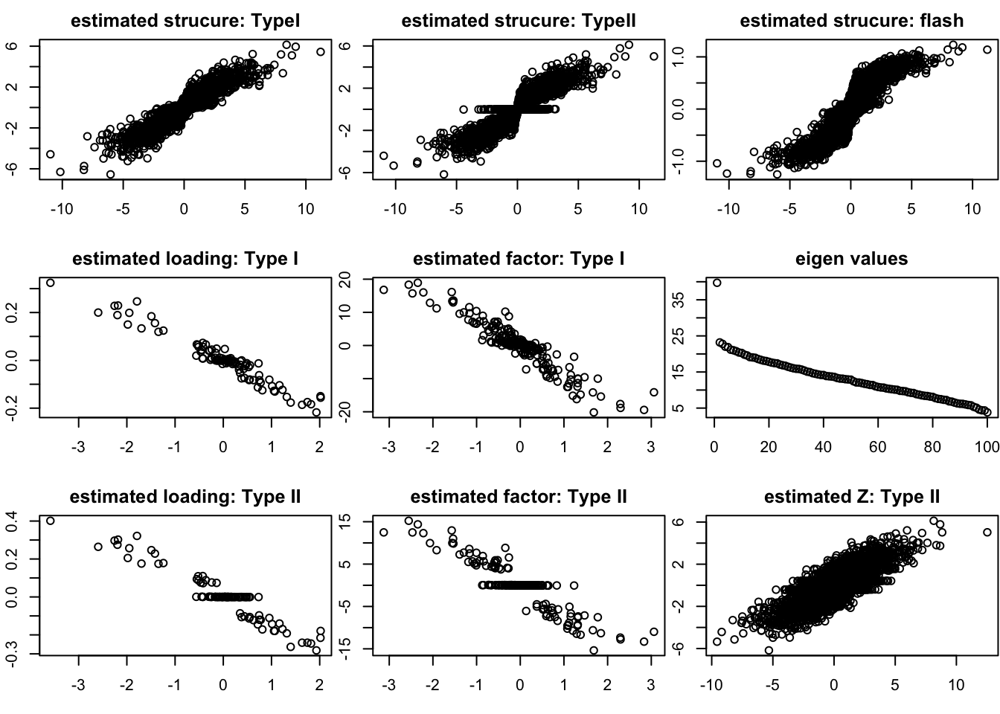
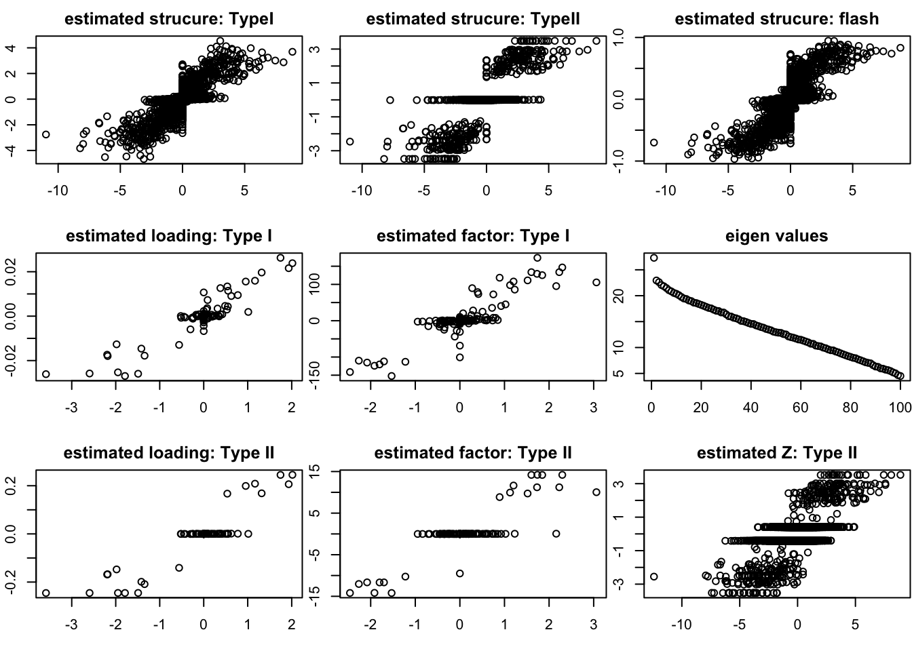
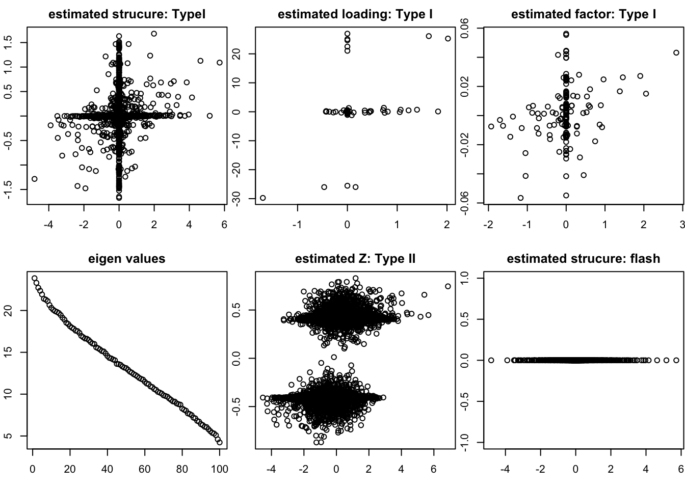
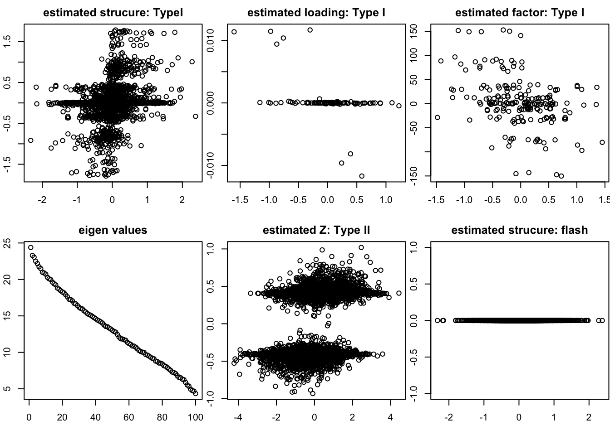

Last updated: 2017-01-20
Code version: dcc0fdc
This report is for the simple implementation of Logistic flash. There are two versions of inference for the model, both of which have advantage and drawbacks. More discussions are needed. We assume that our data matrix is \(Y_{N \times P}\) where \(Y_{ij} = \pm 1\) (we use \(\pm 1\) rather than 0 or 1 here for the Boolean data). We first start from \(\mathbf{rank-one}\) and known variance model, which makes the derivation clear and easy to understand.
We discuss on the model with known variance and rank one structure. Our model is
\[\begin{eqnarray} \log\frac{P(Y_{ij} = 1|Z_{ij})}{P(Y_{ij} = -1 | Z_{ij})} = Z_{ij} \\ Z_{ij} = l_i f_j + E_{ij}\\ E_{ij} \sim N(0,\sigma_e^2)\\ f_j \sim \sum_{m'} \pi_{m'}^f N(f_j; 0, (\sigma_{m'}^f)^2) \\ l_i \sim \sum_m \pi_m^l N(l_i; 0, (\sigma_m^l)^2) \end{eqnarray}\]Here we allow that \((\sigma_{1}^f)^2 = 0\) and \((\sigma_{1}^l)^2=0\), which means we include the point mass into the prior for each component for \(f\) and \(l\).
We introduce two ways of variational Bayes inference to maximize lower bound for the full likelihood. Both of them have advantages and drawbacks. We call them Type I and Type II.
We want to maximize \(F(q_f,q_l,q_z,\Theta)\) where \(\Theta = (\pi^l,\pi^f,\xi)\), \(\pi^l = (\pi^l_1,\cdots,\pi^l_{m_l})\), \(\pi^f = (\pi^f_1,\cdots,\pi^f_{m'_f})\) and \((\xi_{N\times P})_{(ij)} = \xi_{ij}, i = 1,\cdots, N, j = 1,\cdots, P\). The \(\pi^l\) and \(\pi^f\) are from the prior of the \(l\) and \(f\), and we will talk later about where \(\xi\) comes from.
We assume that the approximation of \(q_f(f)q_l(l)q_z(Z)\) is as following:
\[\begin{eqnarray} q_f(f) = \prod_j q_f(f_j) = \prod_j [\sum_{m'}\alpha^f_{jm'} N(\mu^f_{jm'},s^f_{jm'})]\\ q_l(l) = \prod_i q_l(l_i) = \prod_i [\sum_{m}\alpha^l_{im} N(\mu^l_{im},s^l_{im})] \end{eqnarray}\]we use the lower boud of the this objective function, which is
\[\begin{eqnarray} F(q_f,q_l,\Theta) & \geq &\int\int q(l)q(f) \log \frac{P(l)P(f)H(l,f,Y,\xi)}{q(l)q(f)}dldf\\ H(l,f,Y,\xi) &=& exp\{ \sum_{ij}[\frac{Y_{ij}l_if_j -\xi_{ij}}{2} + \log(h(\xi_{ij}))- \tau(\xi_{ij})(l_i^2 f_j^2 + \sigma_e^2 - \xi_{ij}^2) ] \} \\ \tau(\xi) &=& \frac{1}{4 \xi} \tanh(\frac{\xi}{2}) \end{eqnarray}\]Given \(\sigma_e^2\) and \(\xi\), we can apply ASH to estimate the \(l\) and \(f\)
The above result comes from \[\begin{eqnarray} & & \int [\log P(Y|Z)] P(Z|lf)dZ \nonumber \\ &=& \int [ \sum_{ij} \log P(Y_{ij}|Z_{ij})] P(Z|lf)dZ \nonumber \\ &=& \sum_{ij}E_{p_{z|lf}} \log(Y_{ij}|Z_{ij}) \\ &\geq& \sum_{ij} E_{p_{z|lf}} [\frac{Y_{ij}Z_{ij} -\xi_{ij}}{2} + \log(h(\xi_{ij}))- \tau(\xi_{ij})(Z_{ij}^2 - \xi_{ij}^2) ] \end{eqnarray}\]By plugging in the formula of \(H(l,f,\xi)\) into the lowerbound, we can obtain a Ash Type Maximization problem. So the update of \(l\) and \(f\) are following the ATM solution:
\[\begin{eqnarray} \mu_{l_i} &=& \frac{\frac{1}{2}\sum_j(Y_{ij}Ef_j)}{2\sum_j(\tau(\xi_{ij})Ef_j^2)}\\ \sigma^2_{l_i} &=& \frac{1}{2\sum_j(\tau(\xi_{ij})Ef_j^2)}\\ \mu_{f_j} &=& \frac{\frac{1}{2}\sum_i(Y_{ij}El_i)}{2\sum_j(\tau(\xi_{ij})El_i^2)}\\ \sigma^2_{f_j} &=& \frac{1}{2\sum_i(\tau(\xi_{ij})El_i^2)} \end{eqnarray}\]Here we don’t use the \(Z\) as latent variables which makes the estimation of the \(sigma_e^2\) hard because there is no realization (estimation) of the latent variable \(Z\) for the model \(Z = lf^T + E\).
We want to maximize \(F(q_f,q_l,q_z,\Theta)\) where \(\Theta = (\pi^l,\pi^f,\xi)\), \(\pi^l = (\pi^l_1,\cdots,\pi^l_{m_l})\), \(\pi^f = (\pi^f_1,\cdots,\pi^f_{m'_f})\) and \((\xi_{N\times P})_{(ij)} = \xi_{ij}, i = 1,\cdots, N, j = 1,\cdots, P\). The \(\pi^l\) and \(\pi^f\) are from the prior of the \(l\) and \(f\), and we will talk later about where \(\xi\) comes from.
We assume that the approximation of \(q_f(f)q_l(l)q_z(Z)\) is as following:
\[\begin{eqnarray} q_f(f) = \prod_j q_f(f_j) = \prod_j [\sum_{m'}\alpha^f_{jm'} N(\mu^f_{jm'},s^f_{jm'})]\\ q_l(l) = \prod_i q_l(l_i) = \prod_i [\sum_{m}\alpha^l_{im} N(\mu^l_{im},s^l_{im})] \\ q_z(Z) = \prod_{ij} q_z(Z_{ij}) = \prod_{ij} N(\mu^z_{ij},s^z_{ij})) \end{eqnarray}\]where \(C_f,C'_f,C''_f\) are constant with respect to \(f\). This is an Ash Type Maximization.
Similarly for the \(l\) given \(q_f,q_z,\pi^f,\xi\) \[\begin{eqnarray} F(q_f,q_l,q_z,\Theta) & = & \int q_f(f)q_l(l)q_z(Z) \log \frac{P(Z|l,f)P(l)}{q_l(l)} + C_l \\ & = & E_{q_l} \sum_{ij}-\frac{1}{2 \sigma_e^2}( E_{q_z}(Z^2_{ij}) - 2 E_{q_z}(Z_{ij})l_i E_{q_f}(f_j) + l^2_i E_{q_f} (f^2_j)) + E_q \log \frac{P(l)}{q_l(l)} + C'_l \end{eqnarray}\]where \(C_l,C'_l\) are constant with respect to \(l\). This is also an Ash Type Maximization.
So we can convert the variational inference of \(l\) and \(f\) part into FLASH problem \[\begin{eqnarray} E_{q_z} Z = l f^T + E \end{eqnarray}\]There is no closed form for variational inference. But our goal it to maximize the objective function \(F(q_f,q_l,q_z,\Theta)\) with respect to \(q_z,\xi\), which is equivalent to maximize each term of \(F^z_{ij} = E_q \log \frac{P(Y_{ij}|Z_{ij})P(Z_{ij}|l_i,f_j)}{q_z(Z_{ij})}\).
Since \(\log \frac{P(Y_{ij} = 1|Z_{ij})}{P(Y_{ij} = -1 | Z_{ij})} = Z_{ij}\) and \(Y_{ij} = \pm 1\), we can write the \[\begin{eqnarray} P(Y_{ij}|Z_{ij}) = h(Y_{ij}Z_{ij}) = \frac{1}{1+ exp(-Y_{ij}Z_{ij})} \end{eqnarray}\]Based on the (Tommi S. Jaakkola and Michael I. Jordan 2000)[http://link.springer.com/article/10.1023/A:1008932416310], \(h(z)\) has a tight lower bound with parameter \(\xi_x\)
\[\begin{eqnarray} h(z) \geq h(\xi_z) exp(\frac{z-\xi_z}{2} - \tau(\xi_z)(z^2 - \xi_z^2))\\ \tau(\xi_z) = \frac{1}{2\xi_z}(h(\xi_z) - \frac{1}{2}) \end{eqnarray}\]We apply this bound to \(F^z_{ij}(q_z,\xi_{ij})\)
\[\begin{eqnarray} F^z_{ij} & = & E_q \log\frac{h(Y_{ij}Z_{ij}) P(Z_{ij}|l_i,f_j)}{q_z(Z_{ij})} \nonumber \\ &\geq& H^z_{ij}(q_z,\xi_{ij}) \nonumber \\ &=& E_q \log\frac{h(\xi_{ij}) exp(\frac{Y_{ij}Z_{ij}-\xi_{ij}}{2} - \tau(\xi_{ij})(Y^2_{ij}Z_{ij}^2 - \xi_{ij}^2)) P(Z_{ij}|l_i,f_j)}{q_z(Z_{ij})} \end{eqnarray}\] Given \(\xi_z\) the maximizer of \(q_z\) is \[\begin{eqnarray} q_z(Z_{ij}) = N(Z_{ij};\mu^z_{ij},s^z_{ij}) \\ s^z_{ij} = \frac{1}{2\tau(\xi_{ij} )+ \frac{1}{\sigma_e^2}} \\ \mu^z_{ij} = \frac{\frac{E_q(l_if_j)}{\sigma_e^2} + \frac{Y_{ij}}{2}}{2\tau(\xi_{ij} )+ \frac{1}{\sigma_e^2}} \end{eqnarray}\]Given \(q_z\) the maximizer of \(\xi_{ij}\) is
\[\begin{eqnarray} \xi^2_{ij} &=& E_{q_z} Z_{ij}^2 \nonumber \\ &=& (\mu_{ij}^z)^2 + s_{ij}^z \end{eqnarray}\]This assumption on \(Z_{ij}\) with approximation of \(q_z\) might be too strong which introduce too many parameters to estimate and make it difficult for each estimation to borrow information across the data points. For example, \(E_q Z_{ij}\) should be equal to zero when \(El_i = 0\) and \(Ef_j = 0\), but \(E_q Z_{ij}\) is a constant just depend on \(Y_{ij}\) sine we can’t borrow information among all the \(Y_{ij}\) where \(El_i = 0\) and \(Ef_j = 0\).
Both Type I and Type II have advantages and disadvantages. We list those issues we found so far as following:
In this report we focus on the rank one case with known variance because it is not clear to me how to estimate the variance and rank in type II method.
All the simulation based on this model:
\[\begin{eqnarray*} \log\frac{P(Y_{ij} = 1|Z_{ij})}{P(Y_{ij} = -1 | Z_{ij})} = Z_{ij} \\ Z_{ij} = l_i f_j + E_{ij}\\ E_{ij} \sim N(0,\sigma_e^2)\\ f_j \sim \sum_{m'} \pi_{m'}^f N(f_j; 0, (\sigma_{m'}^f)^2) \\ l_i \sim \sum_m \pi_m^l N(l_i; 0, (\sigma_m^l)^2) \end{eqnarray*}\]We set different sparsity and scale of the loadings and factors to control the strength of signal.

[1] "Type I" "0.434169703146147"[1] "Type II" "0.508093461635351"[1] "FLASH" "0.778323316931171"
[1] "Type I" "0.608761988560814"[1] "Type II" "0.679866827125007"[1] "FLASH" "0.847853461568094"[1] "rank 0"
[1] "Type I" "1.11473048269686"[1] "Type II" "1" [1] "FLASH" "1" [1] "rank 0"
[1] "Type I" "1.06798447687921"[1] "Type II" "1" [1] "FLASH" "1" All methods provide zero rank estimations.
[1] "rank 0"[1] "rank 0"[1] "Type I" "1" [1] "Type II" "1" [1] "FLASH" "1" sessionInfo()R version 3.3.0 (2016-05-03)
Platform: x86_64-apple-darwin13.4.0 (64-bit)
Running under: OS X 10.12.2 (unknown)
locale:
[1] en_US.UTF-8/en_US.UTF-8/en_US.UTF-8/C/en_US.UTF-8/en_US.UTF-8
attached base packages:
[1] stats graphics grDevices utils datasets methods base
other attached packages:
[1] MASS_7.3-45 workflowr_0.3.0 rmarkdown_1.3
loaded via a namespace (and not attached):
[1] Rcpp_0.12.8 rstudioapi_0.6 knitr_1.15.1
[4] magrittr_1.5 REBayes_0.63 doParallel_1.0.10
[7] pscl_1.4.9 SQUAREM_2016.8-2 lattice_0.20-33
[10] foreach_1.4.3 ashr_2.0.4 stringr_1.1.0
[13] flashr_0.1.1 tools_3.3.0 parallel_3.3.0
[16] grid_3.3.0 irlba_2.1.1 git2r_0.18.0
[19] htmltools_0.3.5 iterators_1.0.8 assertthat_0.1
[22] yaml_2.1.14 rprojroot_1.2 digest_0.6.11
[25] Matrix_1.2-7.1 codetools_0.2-14 evaluate_0.10
[28] stringi_1.1.1 Rmosek_7.1.2 backports_1.0.5
[31] truncnorm_1.0-7 This R Markdown site was created with workflowr